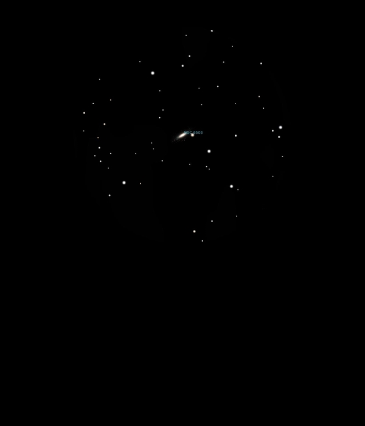

NGC 6503
Dwarf Spiral Galaxy in
Draco
NGC 6543
Mag 10.2
22/08/16
A faint but well defined oval in 12mm and 25mm
In 25mm it sits above a line of stars which just fit into the
FOV
HIP 87295 is the brightest at Mag 8.60 with HIP 87051 at Mag
8.70 to its left and stars of Mags 9.05 and 9.20 to its right
Very nice on a still clear night